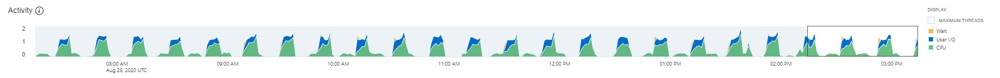

This was first published on https://www.dbi-services.com/blog/troubleshooting-autonomous-database/ (2020-08-29)
Republishing here for new followers. The content is related to the versions available at the publication date.
. 
On my Oracle Cloud Free Tier Autonomous Transaction Processing service, a database that can be used for free with no time limit, I have seen this strange activity. As I’m running nothing scheduled, I was surprised by this pattern and looked at it by curiosity. And I got the idea to take some screenshot to show you how I look at those things. The easiest performance tool available in the Autonomous Database is the Performance Hub which shows the activity though time with detail on multiple dimensions for drill-down analysis. This is based on ASH of course.
In the upper pane, I focus on the part with homogenous activity because I may views the content without the timeline and then want to compare the activity metric (Average Active Session) with the peak I observed. Without this, I may start to look to something that is not significant and waste my time. Here, where the activity is about 1 active session, I want to drill-down on dimensions that account for around 0.8 active sessions to be sure to address 80% of the surprising activity. If the part selected includes some idle time around, I would not be able to do this easily.
The second pane let me drill-down either on 3 dimensions in a load map (we will see that later), or one main dimension with the time axis (in this screenshot the dimension is “Consumer Group”) with two other dimensions below displayed without the time detail, here “Wait Class” and “Wait Event”. This is where I want to compare the activity (0.86 average active session on CPU) to the load I’m looking at, as I don’t have the time to see peaks and idle periods.
I have more information from “Resource Consumption”:
I’ll dig into those details later. There’s no direct detail for the CPU consumption. I’ll look at logical reads of course, and SQL Plan but I cannot directly match the CPU time with that. Especially from Average Active Session where I don’t have the CPU time – I have only samples there. It may be easier with “User I/O” because they should show up in other dimensions.
There are no “Blocking Session” but the ASH Dimension “Object” gives interesting information:
I don’t know an easy way to copy/paste from the Performance Hub so I have generated an AWR report and found them in the Top DB Objects section:
| Object ID | % Activity | Event | % Event | Object Name (Type) | Tablespace | Container Name |
|---|---|---|---|---|---|---|
| 9135 | 24.11 | direct path read | 24.11 | SYS.SYS_LOB0000009134C00039$$ (LOB) | SYSAUX | SUULFLFCSYX91Z0_ATP1 |
| 11039 | 10.64 | direct path read | 10.64 | SYS.SYS_LOB0000011038C00004$$ (LOB) | SYSAUX | SUULFLFCSYX91Z0_ATP1 |
That’s the beauty of ASH. In addition, to show you the load per multiple dimensions, it links all dimensions. Here, without guessing, I know that those objects are responsible for the “direct path read temp” I have seen above.
Let me insist on the numbers. I mentioned that I selected, in the upper chart, a homogeneous activity time window in order to compare the activity number with and without the time axis. My total activity during this time window is a little bit over 1 session active (on average, AAS – Average Active Session). I can see this on the time chart y-axis. And I confirm it if I sum-up the aggregations on other dimensions. Like above CPU + USER I/O was 0.86 + 0.37 =1.23 when the selected part was around 1.25 active sessions. Here when looking at “Object” dimension, I see around 0.5 sessions on SYS_LOB0000011038C00004$$ (green) during one minute, then around 0.3 sessions on SYS_LOB0000009134C00039$$ (blue) for 5 minutes and no activity on objects during 1 minute. That matches approximately the 0.37 AAS on User I/O. From the AWR report this is displayed as “% Event” and 24.11 + 10.64 = 34.75% which is roughly the ratio of those 0.37 to 1.25 we had with Average Active Sessions. When looking at sampling activity details, it is important to keep in mind the weight of each component we look at.
Let’s get more detail about those objects, from SQL Developer Web, or any connection:
DEMO@atp1_tp> select owner,object_name,object_type,oracle_maintained from dba_objects
where owner='SYS' and object_name in ('SYS_LOB0000009134C00039$$','SYS_LOB0000011038C00004$$');
OWNER OBJECT_NAME OBJECT_TYPE ORACLE_MAINTAINED
________ ____________________________ ______________ ____________________
SYS SYS_LOB0000009134C00039$$ LOB Y
SYS SYS_LOB0000011038C00004$$ LOB Y
DEMO@atp1_tp> select owner,table_name,column_name,segment_name,tablespace_name from dba_lobs
where owner='SYS' and segment_name in ('SYS_LOB0000009134C00039$$','SYS_LOB0000011038C00004$$');
OWNER TABLE_NAME COLUMN_NAME SEGMENT_NAME TABLESPACE_NAME
________ _________________________ ______________ ____________________________ __________________
SYS WRI$_SQLSET_PLAN_LINES OTHER_XML SYS_LOB0000009134C00039$$ SYSAUX
SYS WRH$_SQLTEXT SQL_TEXT SYS_LOB0000011038C00004$$ SYSAUX
Ok, that’s interesting information. It confirms why I see ‘internal’ everywhere: those are dictionary tables.
WRI$_SQLSET_PLAN_LINES is about SQL Tuning Sets and in 19c, especially with the Auto Index feature, the SQL statements are captured every 15 minutes and analyzed to find index candidates. A look at SQL Tuning Sets confirms this:
DEMO@atp1_tp> select sqlset_name,parsing_schema_name,count(*),dbms_xplan.format_number(sum(length(sql_text))),min(plan_timestamp)
from dba_sqlset_statements group by parsing_schema_name,sqlset_name order by count(*);
SQLSET_NAME PARSING_SCHEMA_NAME COUNT(*) DBMS_XPLAN.FORMAT_NUMBER(SUM(LENGTH(SQL_TEXT))) MIN(PLAN_TIMESTAMP)
_______________ ______________________ ___________ __________________________________________________ ______________________
SYS_AUTO_STS C##OMLIDM 1 53 30-APR-20
SYS_AUTO_STS FLOWS_FILES 1 103 18-JUL-20
SYS_AUTO_STS DBSNMP 6 646 26-MAY-20
SYS_AUTO_STS XDB 7 560 20-MAY-20
SYS_AUTO_STS ORDS_PUBLIC_USER 9 1989 30-APR-20
SYS_AUTO_STS GUEST0001 10 3656 20-MAY-20
SYS_AUTO_STS CTXSYS 12 1193 20-MAY-20
SYS_AUTO_STS LBACSYS 28 3273 30-APR-20
SYS_AUTO_STS AUDSYS 29 3146 26-MAY-20
SYS_AUTO_STS ORDS_METADATA 29 4204 20-MAY-20
SYS_AUTO_STS C##ADP$SERVICE 33 8886 11-AUG-20
SYS_AUTO_STS MDSYS 39 4964 20-MAY-20
SYS_AUTO_STS DVSYS 65 8935 30-APR-20
SYS_AUTO_STS APEX_190200 130 55465 30-APR-20
SYS_AUTO_STS C##CLOUD$SERVICE 217 507K 30-APR-20
SYS_AUTO_STS ADMIN 245 205K 30-APR-20
SYS_AUTO_STS DEMO 628 320K 30-APR-20
SYS_AUTO_STS APEX_200100 2,218 590K 18-JUL-20
SYS_AUTO_STS SYS 106,690 338M 30-APR-20
All gathered by this SYS_AUTO_STS job. And the statements captured were parsed by SYS – a system job has hard work because of system statements, as I mentioned when seeing this for the first time:
Auto Index having hard work on ATP.
select count(*) from dba_sqlset_statements;
COUNT(*)
___________
109,770 pic.twitter.com/TFHTbVhSvd— Franck Pachot (@FranckPachot) August 27, 2020
With this drill-down from the “Object” dimension, I’ve already gone far enough to get an idea about the problem: an internal job is reading the huge SQL Tuning Sets that have been collected by the Auto STS job introduced in 19c (and used by Auto Index). But I’ll continue to look at all other ASH Dimensions. They can give me more detail or at least confirm my guesses. That’s the idea: you look at all the dimensions and once one gives you interesting information, you dig down to more details.
I look at “PL/SQL” ASH dimension first because an application should call SQL from procedural code and not the opposite. And, as all this is internal, developed by Oracle, I expect they do it this way.
Again, I copy/paste to avoid typos and got them from the AWR report “Top PL/SQL Procedures” section:
| PL/SQL Entry Subprogram | % Activity | PL/SQL Current Subprogram | % Current | Container Name |
|---|---|---|---|---|
| UNKNOWN_PLSQL_ID <19038, 5> | 78.72 | SQL | 46.81 | SUULFLFCSYX91Z0_ATP1 |
|
UNKNOWN_PLSQL_ID <19038,5>
|
78.72
|
UNKNOWN_PLSQL_ID <7322, 38> | 31.21 | SUULFLFCSYX91Z0_ATP1 |
| UNKNOWN_PLSQL_ID <13644, 332> | 2.13 | SQL | 2.13 | SUULFLFCSYX91Z0_ATP1 |
| UNKNOWN_PLSQL_ID <30582, 1> | 1.42 | SQL | 1.42 | SUULFLFCSYX91Z0_ATP1 |
Side note on the number: activity was 0.35 AAS on top-level PL/SQL, 0.33 on current PL/SQL. 0.33 is included within 0.35 as a session active on a PL/SQL call. In AWR (where “Entry” means “top-level”) you see them nested and including the SQL activity. This is why you see 78.72% here, it is SQL + PL/SQL executed under the top-level call. But actually, the procedure (7322,38) is 31.21% if the total AAS, which matches the 0.33 AAS.
By the way, I didn’t mention it before but this in AWR report is actually an ASH report that is included in the AWR html report.
Now trying to know which are those procedures. I think the “UNKNOWN” comes from not finding it in the packages procedures:
DEMO@atp1_tp> select * from dba_procedures where (object_id,subprogram_id) in ( (7322,38) , (19038,5) );
no rows selected
but I find them from DBA_OBJECTS:
DEMO@atp1_tp> select owner,object_name,object_id,object_type,oracle_maintained,last_ddl_time from dba_objects where object_id in (7322,19038);
OWNER OBJECT_NAME OBJECT_ID OBJECT_TYPE ORACLE_MAINTAINED LAST_DDL_TIME
________ _____________________ ____________ ______________ ____________________ ________________
SYS XMLTYPE 7,322 TYPE Y 18-JUL-20
SYS DBMS_AUTOTASK_PRVT 19,038 PACKAGE Y 22-MAY-20
and DBA_PROCEDURES:
DEMO@atp1_tp> select owner,object_name,procedure_name,object_id,subprogram_id from dba_procedures where object_id in(7322,19038);
OWNER OBJECT_NAME PROCEDURE_NAME OBJECT_ID SUBPROGRAM_ID
________ _____________________________ _________________ ____________ ________________
SYS DBMS_RESULT_CACHE_INTERNAL RELIES_ON 19,038 1
SYS DBMS_RESULT_CACHE_INTERNAL 19,038 0
All this doesn’t match 🙁
My guess is that the top level PL/SQL object is DBMS_AUTOTASK_PRVT as I can see in the container it is running on, which is the one I’m connected to (an autonomous database is a pluggable database in the Oracle Cloud container database). It has the OBJECT_ID=19038 in my PDB. But the DBA_PROCEDURES is an extended data link and the OBJECT_ID of common objects are different in CDB$ROOT and PDBs. And OBJECT_ID=7322 is probably an identifier in CDB$ROOT, where active session monitoring runs. I cannot verify as I have only a local user. Because of this inconsistency, my drill-down on the PL/SQL dimension stops there.
The package calls some SQL and from browsing the AWR report I’ve seen in the time model that “sql execute elapsed time” is the major component:
| Statistic Name | Time (s) | % of DB Time | % of Total CPU Time |
|---|---|---|---|
| sql execute elapsed time | 1,756.19 | 99.97 | |
| DB CPU | 1,213.59 | 69.08 | 94.77 |
| PL/SQL execution elapsed time | 498.62 | 28.38 |
I’ll follow the hierarchy of this dimension – the most detailed will be the SQL Plan operation. But let’s start with “SQL Opcode”
From the AWR report, I see all statements with no distinction about the top level one, and there’s no spinning top to help you find what is running as a recursive call or the top-level one. It can be often guessed from the time and other statistics – here I have 3 queries taking almost the same database time:
| Elapsed Time (s) | Executions | Elapsed Time per Exec (s) | %Total | %CPU | %IO | SQL Id | SQL Module | SQL Text |
|---|---|---|---|---|---|---|---|---|
| 1,110.86 | 3 | 370.29 | 63.24 | 61.36 | 50.16 | dkb7ts34ajsjy | DBMS_SCHEDULER | DECLARE job BINARY_INTEGER := … |
| 1,110.85 | 3 | 370.28 | 63.24 | 61.36 | 50.16 | f6j6vuum91fw8 | DBMS_SCHEDULER | begin /*KAPI:task_proc*/ dbms_… |
| 1,087.12 | 3 | 362.37 | 61.88 | 61.65 | 49.93 | 0y288pk81u609 | SYS_AI_MODULE | SELECT /*+dynamic_sampling(11)… |
SYS_AI_MODULE is the Auto Indexing feature
DEMO@atp1_tp> select distinct sql_id,sql_text from v$sql where sql_id in ('dkb7ts34ajsjy','f6j6vuum91fw8','0y288pk81u609');
dkb7ts34ajsjy DECLARE job BINARY_INTEGER := :job; next_date TIMESTAMP WITH TIME ZONE := :mydate; broken BOOLEAN := FALSE; job_name VARCHAR2(128) := :job_name; job_subname VARCHAR2(128) := :job_subname; job_owner VARCHAR2(128) := :job_owner; job_start TIMESTAMP WITH TIME ZONE := :job_start; job_scheduled_start TIMESTAMP WITH TIME ZONE := :job_scheduled_start; window_start TIMESTAMP WITH TIME ZONE := :window_start; window_end TIMESTAMP WITH TIME ZONE := :window_end; chain_id VARCHAR2(14) := :chainid; credential_owner VARCHAR2(128) := :credown; credential_name VARCHAR2(128) := :crednam; destination_owner VARCHAR2(128) := :destown; destination_name VARCHAR2(128) := :destnam; job_dest_id varchar2(14) := :jdestid; log_id number := :log_id; BEGIN begin dbms_autotask_prvt.run_autotask(3, 0); end; :mydate := next_date; IF broken THEN :b := 1; ELSE :b := 0; END IF; END;
f6j6vuum91fw8 begin /*KAPI:task_proc*/ dbms_auto_index_internal.task_proc(FALSE); end;
0y288pk81u609 SELECT /*+dynamic_sampling(11) NO_XML_QUERY_REWRITE */ SQL_ID, PLAN_HASH_VALUE, ELAPSED_TIME/EXECUTIONS ELAPSED_PER_EXEC, DBMS_AUTO_INDEX_INTERNAL.AUTO_INDEX_ALLOW(CE) SESSION_TYPE FROM (SELECT SQL_ID, PLAN_HASH_VALUE, MIN(ELAPSED_TIME) ELAPSED_TIME, MIN(EXECUTIONS) EXECUTIONS, MIN(OPTIMIZER_ENV) CE, MAX(EXISTSNODE(XMLTYPE(OTHER_XML), '/other_xml/info[@type = "has_user_tab"]')) USER_TAB FROM (SELECT F.NAME AS SQLSET_NAME, F.OWNER AS SQLSET_OWNER, SQLSET_ID, S.SQL_ID, T.SQL_TEXT, S.COMMAND_TYPE, P.PLAN_HASH_VALUE, SUBSTRB(S.MODULE, 1, (SELECT KSUMODLEN FROM X$MODACT_LENGTH)) MODULE, SUBSTRB(S.ACTION, 1, (SELECT KSUACTLEN FROM X$MODACT_LENGTH)) ACTION, C.ELAPSED_TIME, C.BUFFER_GETS, C.EXECUTIONS, C.END_OF_FETCH_COUNT, P.OPTIMIZER_ENV, L.OTHER_XML FROM WRI$_SQLSET_DEFINITIONS F, WRI$_SQLSET_STATEMENTS S, WRI$_SQLSET_PLANS P,WRI$_SQLSET_MASK M, WRH$_SQLTEXT T, WRI$_SQLSET_STATISTICS C, WRI$_SQLSET_PLAN_LINES L WHERE F.ID = S.SQLSET_ID AND S.ID = P.STMT_ID AND S.CON_DBID = P.CON_DBID AND P.
It looks like dbms_autotask_prvt.run_autotask calls dbms_auto_index_internal.task_proc that queries WRI$_SQLSET tables and this is where all the database time goes.
Again, I use the graphical Performance Hub to find where I need to drill down and find all details in the AWR report “Top SQL with Top Events” section:
| SQL ID | Plan Hash | Executions | % Activity | Event | % Event | Top Row Source | % Row Source | SQL Text |
|---|---|---|---|---|---|---|---|---|
| 0y288pk81u609 | 2011736693 | 3 | 70.21 | CPU + Wait for CPU | 35.46 | HASH – GROUP BY | 28.37 | SELECT /*+dynamic_sampling(11)… |
|
0y288pk81u609
|
2011736693
|
3
|
70.21
|
direct path read | 34.75 | HASH – GROUP BY | 24.11 | |
| 444n6jjym97zv | 1982042220 | 18 | 12.77 | CPU + Wait for CPU | 12.77 | FIXED TABLE – FULL | 12.77 | SELECT /*+ unnest */ * FROM GV… |
| 1xx2k8pu4g5yf | 2224464885 | 2 | 5.67 | CPU + Wait for CPU | 5.67 | FIXED TABLE – FIXED INDEX | 2.84 | SELECT /*+ first_rows(1) */ s… |
| 3kqrku32p6sfn | 3786872576 | 3 | 2.13 | CPU + Wait for CPU | 2.13 | FIXED TABLE – FULL | 2.13 | MERGE /*+ OPT_PARAM(‘_parallel… |
| 64z4t33vsvfua | 3336915854 | 2 | 1.42 | CPU + Wait for CPU | 1.42 | FIXED TABLE – FIXED INDEX | 0.71 | WITH LAST_HOUR AS ( SELECT ROU… |
I can see the full SQL Text in the AWR report and get the AWR statement report with dbms_workload_repository. I can also fetch the plan with DBMS_XPLAN.DISPLAY_AWR:
DEMO@atp1_tp> select * from dbms_xplan.display_awr('0y288pk81u609',2011736693,null,'+peeked_binds');
PLAN_TABLE_OUTPUT
_______________________________________________________________________________________________________________________________
SQL_ID 0y288pk81u609
--------------------
SELECT /*+dynamic_sampling(11) NO_XML_QUERY_REWRITE */ SQL_ID,
PLAN_HASH_VALUE, ELAPSED_TIME/EXECUTIONS ELAPSED_PER_EXEC,
DBMS_AUTO_INDEX_INTERNAL.AUTO_INDEX_ALLOW(CE) SESSION_TYPE FROM (SELECT
SQL_ID, PLAN_HASH_VALUE, MIN(ELAPSED_TIME) ELAPSED_TIME,
MIN(EXECUTIONS) EXECUTIONS, MIN(OPTIMIZER_ENV) CE,
MAX(EXISTSNODE(XMLTYPE(OTHER_XML), '/other_xml/info[@type =
"has_user_tab"]')) USER_TAB FROM (SELECT F.NAME AS SQLSET_NAME, F.OWNER
AS SQLSET_OWNER, SQLSET_ID, S.SQL_ID, T.SQL_TEXT, S.COMMAND_TYPE,
P.PLAN_HASH_VALUE, SUBSTRB(S.MODULE, 1, (SELECT KSUMODLEN FROM
X$MODACT_LENGTH)) MODULE, SUBSTRB(S.ACTION, 1, (SELECT KSUACTLEN FROM
X$MODACT_LENGTH)) ACTION, C.ELAPSED_TIME, C.BUFFER_GETS, C.EXECUTIONS,
C.END_OF_FETCH_COUNT, P.OPTIMIZER_ENV, L.OTHER_XML FROM
WRI$_SQLSET_DEFINITIONS F, WRI$_SQLSET_STATEMENTS S, WRI$_SQLSET_PLANS
P,WRI$_SQLSET_MASK M, WRH$_SQLTEXT T, WRI$_SQLSET_STATISTICS C,
WRI$_SQLSET_PLAN_LINES L WHERE F.ID = S.SQLSET_ID AND S.ID = P.STMT_ID
AND S.CON_DBID = P.CON_DBID AND P.STMT_ID = C.STMT_ID AND
P.PLAN_HASH_VALUE = C.PLAN_HASH_VALUE AND P.CON_DBID = C.CON_DBID AND
P.STMT_ID = M.STMT_ID AND P.PLAN_HASH_VALUE = M.PLAN_HASH_VALUE AND
P.CON_DBID = M.CON_DBID AND S.SQL_ID = T.SQL_ID AND S.CON_DBID =
T.CON_DBID AND T.DBID = F.CON_DBID AND P.STMT_ID=L.STMT_ID AND
P.PLAN_HASH_VALUE = L.PLAN_HASH_VALUE AND P.CON_DBID = L.CON_DBID) S,
WRI$_ADV_OBJECTS OS WHERE SQLSET_OWNER = :B8 AND SQLSET_NAME = :B7 AND
(MODULE IS NULL OR (MODULE != :B6 AND MODULE != :B5 )) AND SQL_TEXT NOT
LIKE 'SELECT /* DS_SVC */%' AND SQL_TEXT NOT LIKE 'SELECT /*
OPT_DYN_SAMP */%' AND SQL_TEXT NOT LIKE '/*AUTO_INDEX:ddl*/%' AND
SQL_TEXT NOT LIKE '%/*+%dbms_stats%' AND COMMAND_TYPE NOT IN (9, 10,
11) AND PLAN_HASH_VALUE > 0 AND BUFFER_GETS > 0 AND EXECUTIONS > 0 AND
OTHER_XML IS NOT NULL AND OS.SQL_ID_VC (+)= S.SQL_ID AND OS.TYPE (+)=
:B4 AND DECODE(OS.TYPE(+), :B4 , TO_NUMBER(OS.ATTR2(+)), -1) =
S.PLAN_HASH_VALUE AND OS.TASK_ID (+)= :B3 AND OS.EXEC_NAME (+) IS NULL
AND (OS.SQL_ID_VC IS NULL OR TO_DATE(OS.ATTR18, :B2 ) 0 ORDER BY
DBMS_AUTO_INDEX_INTERNAL.AUTO_INDEX_ALLOW(CE) DESC, ELAPSED_TIME DESC
Plan hash value: 2011736693
----------------------------------------------------------------------------------------------------------------------------
| Id | Operation | Name | Rows | Bytes | Cost (%CPU)| Time |
----------------------------------------------------------------------------------------------------------------------------
| 0 | SELECT STATEMENT | | | | 957 (100)| |
| 1 | SORT ORDER BY | | 180 | 152K| 957 (18)| 00:00:01 |
| 2 | FILTER | | | | | |
| 3 | HASH GROUP BY | | 180 | 152K| 957 (18)| 00:00:01 |
| 4 | NESTED LOOPS | | 3588 | 3030K| 955 (18)| 00:00:01 |
| 5 | FILTER | | | | | |
| 6 | HASH JOIN RIGHT OUTER | | 3588 | 2964K| 955 (18)| 00:00:01 |
| 7 | TABLE ACCESS BY INDEX ROWID BATCHED| WRI$_ADV_OBJECTS | 1 | 61 | 4 (0)| 00:00:01 |
| 8 | INDEX RANGE SCAN | WRI$_ADV_OBJECTS_IDX_02 | 1 | | 3 (0)| 00:00:01 |
| 9 | HASH JOIN | | 3588 | 2750K| 951 (18)| 00:00:01 |
| 10 | TABLE ACCESS STORAGE FULL | WRI$_SQLSET_PLAN_LINES | 86623 | 2706K| 816 (19)| 00:00:01 |
| 11 | HASH JOIN | | 3723 | 2737K| 134 (8)| 00:00:01 |
| 12 | TABLE ACCESS STORAGE FULL | WRI$_SQLSET_STATISTICS | 89272 | 2789K| 21 (10)| 00:00:01 |
| 13 | HASH JOIN | | 3744 | 2636K| 112 (7)| 00:00:01 |
| 14 | JOIN FILTER CREATE | :BF0000 | 2395 | 736K| 39 (13)| 00:00:01 |
| 15 | HASH JOIN | | 2395 | 736K| 39 (13)| 00:00:01 |
| 16 | TABLE ACCESS STORAGE FULL | WRI$_SQLSET_STATEMENTS | 3002 | 137K| 13 (24)| 00:00:01 |
| 17 | FIXED TABLE FULL | X$MODACT_LENGTH | 1 | 5 | 0 (0)| |
| 18 | FIXED TABLE FULL | X$MODACT_LENGTH | 1 | 5 | 0 (0)| |
| 19 | FIXED TABLE FULL | X$MODACT_LENGTH | 1 | 5 | 0 (0)| |
| 20 | NESTED LOOPS | | 1539 | 402K| 25 (4)| 00:00:01 |
| 21 | TABLE ACCESS BY INDEX ROWID | WRI$_SQLSET_DEFINITIONS | 1 | 27 | 1 (0)| 00:00:01 |
| 22 | INDEX UNIQUE SCAN | WRI$_SQLSET_DEFINITIONS_IDX_01 | 1 | | 0 (0)| |
| 23 | TABLE ACCESS STORAGE FULL | WRH$_SQLTEXT | 1539 | 362K| 24 (5)| 00:00:01 |
| 24 | JOIN FILTER USE | :BF0000 | 89772 | 34M| 73 (3)| 00:00:01 |
| 25 | TABLE ACCESS STORAGE FULL | WRI$_SQLSET_PLANS | 89772 | 34M| 73 (3)| 00:00:01 |
| 26 | INDEX UNIQUE SCAN | WRI$_SQLSET_MASK_PK | 1 | 19 | 0 (0)| |
----------------------------------------------------------------------------------------------------------------------------
Hint Report (identified by operation id / Query Block Name / Object Alias):
Total hints for statement: 7 (U - Unused (7))
---------------------------------------------------------------------------
0 - SEL$5
U - MERGE(@"SEL$5" >"SEL$4") / duplicate hint
U - MERGE(@"SEL$5" >"SEL$4") / duplicate hint
1 - SEL$5C160134
U - dynamic_sampling(11) / rejected by IGNORE_OPTIM_EMBEDDED_HINTS
17 - SEL$7286615E
U - PUSH_SUBQ(@"SEL$7286615E") / duplicate hint
U - PUSH_SUBQ(@"SEL$7286615E") / duplicate hint
17 - SEL$7286615E / X$MODACT_LENGTH@SEL$5
U - FULL(@"SEL$7286615E" "X$MODACT_LENGTH"@"SEL$5") / duplicate hint
U - FULL(@"SEL$7286615E" "X$MODACT_LENGTH"@"SEL$5") / duplicate hint
Peeked Binds (identified by position):
--------------------------------------
1 - :B8 (VARCHAR2(30), CSID=873): 'SYS'
2 - :B7 (VARCHAR2(30), CSID=873): 'SYS_AUTO_STS'
5 - :B4 (NUMBER): 7
7 - :B3 (NUMBER): 15
Note
-----
- SQL plan baseline SQL_PLAN_gf2c99a3zrzsge1b441a5 used for this statement
I can confirm what I’ve seen about HASH GROUP BY on line ID=3
I forgot to mention that SQL Monitor is not available for this query probably because it is disabled for internal queries. Anyway, the most interesting here is that the plan comes from SQL Plan Management
Here is more information about this SQL Plan Baseline:
DEMO@atp1_tp> select * from dbms_xplan.display_sql_plan_baseline('','SQL_PLAN_gf2c99a3zrzsge1b441a5');
...
--------------------------------------------------------------------------------
SQL handle: SQL_f709894a87fbff0f
SQL text: SELECT /*+dynamic_sampling(11) NO_XML_QUERY_REWRITE */ SQL_ID,
PLAN_HASH_VALUE, ELAPSED_TIME/EXECUTIONS ELAPSED_PER_EXEC,
...
--------------------------------------------------------------------------------
Plan name: SQL_PLAN_gf2c99a3zrzsge1b441a5 Plan id: 3786686885
Enabled: YES Fixed: NO Accepted: YES Origin: AUTO-CAPTURE
Plan rows: From dictionary
--------------------------------------------------------------------------------
...
This shows only one plan, but I want to see all plans for this statement.
DEMO@atp1_tp> select
CREATOR,ORIGIN,CREATED,LAST_MODIFIED,LAST_EXECUTED,LAST_VERIFIED,ENABLED,ACCEPTED,FIXED,REPRODUCED
from dba_sql_plan_baselines where sql_handle='SQL_f709894a87fbff0f' order by created;
CREATOR ORIGIN CREATED LAST_MODIFIED LAST_EXECUTED LAST_VERIFIED ENABLED ACCEPTED FIXED REPRODUCED
__________ ________________________________ __________________ __________________ __________________ __________________ __________ ___________ ________ _____________
SYS EVOLVE-LOAD-FROM-AWR 30-MAY-20 11:50 30-JUL-20 23:34 30-JUL-20 23:34 YES NO NO YES
SYS EVOLVE-LOAD-FROM-AWR 30-MAY-20 11:50 31-JUL-20 05:03 31-JUL-20 05:03 YES NO NO YES
SYS EVOLVE-LOAD-FROM-CURSOR-CACHE 30-MAY-20 11:50 31-JUL-20 06:09 31-JUL-20 06:09 YES NO NO YES
SYS EVOLVE-LOAD-FROM-AWR 30-MAY-20 11:50 31-JUL-20 06:09 31-JUL-20 06:09 YES NO NO YES
SYS AUTO-CAPTURE 30-MAY-20 16:08 31-JUL-20 07:15 31-JUL-20 07:15 YES NO NO YES
SYS AUTO-CAPTURE 30-MAY-20 19:10 30-MAY-20 19:30 30-MAY-20 19:30 30-MAY-20 19:29 YES YES NO YES
SYS AUTO-CAPTURE 30-MAY-20 19:30 31-JUL-20 08:21 31-JUL-20 08:21 YES NO NO YES
SYS AUTO-CAPTURE 30-MAY-20 23:32 31-JUL-20 08:21 31-JUL-20 08:21 YES NO NO YES
SYS AUTO-CAPTURE 31-MAY-20 03:14 31-JUL-20 08:21 31-JUL-20 08:21 YES NO NO YES
SYS AUTO-CAPTURE 31-MAY-20 04:14 31-JUL-20 08:21 31-JUL-20 08:21 YES NO NO YES
SYS EVOLVE-LOAD-FROM-AWR 31-MAY-20 13:04 31-JUL-20 23:43 31-JUL-20 23:43 YES NO NO YES
SYS AUTO-CAPTURE 31-MAY-20 13:19 31-JUL-20 23:43 31-JUL-20 23:43 YES NO NO YES
SYS AUTO-CAPTURE 31-MAY-20 13:39 11-JUL-20 04:35 11-JUL-20 04:35 31-MAY-20 14:09 YES YES NO YES
SYS AUTO-CAPTURE 31-MAY-20 18:01 10-AUG-20 22:05 10-AUG-20 22:05 YES NO NO YES
SYS AUTO-CAPTURE 31-MAY-20 22:44 10-AUG-20 22:05 10-AUG-20 22:05 YES NO NO YES
SYS AUTO-CAPTURE 01-JUN-20 06:48 10-AUG-20 22:05 10-AUG-20 22:05 YES NO NO YES
SYS AUTO-CAPTURE 01-JUN-20 07:09 10-AUG-20 22:05 10-AUG-20 22:05 YES NO NO YES
SYS AUTO-CAPTURE 02-JUN-20 05:22 02-JUN-20 05:49 02-JUN-20 05:49 YES YES NO YES
SYS AUTO-CAPTURE 02-JUN-20 21:52 10-AUG-20 22:06 10-AUG-20 22:06 YES NO NO YES
SYS AUTO-CAPTURE 03-JUN-20 08:20 23-AUG-20 20:45 23-AUG-20 20:45 03-JUN-20 08:49 YES YES NO YES
SYS AUTO-CAPTURE 04-JUN-20 01:34 10-AUG-20 22:06 10-AUG-20 22:06 YES NO NO YES
SYS AUTO-CAPTURE 05-JUN-20 21:43 10-AUG-20 22:06 10-AUG-20 22:06 YES NO NO YES
SYS AUTO-CAPTURE 14-JUN-20 06:01 18-AUG-20 23:22 18-AUG-20 23:22 14-JUN-20 10:52 YES YES NO YES
SYS AUTO-CAPTURE 14-JUN-20 06:21 13-AUG-20 22:35 13-AUG-20 22:35 YES NO NO YES
SYS AUTO-CAPTURE 27-JUN-20 16:43 27-AUG-20 22:11 27-AUG-20 22:11 YES NO NO YES
SYS AUTO-CAPTURE 28-JUN-20 02:09 28-JUN-20 06:52 28-JUN-20 06:52 28-JUN-20 06:41 YES YES NO YES
SYS AUTO-CAPTURE 28-JUN-20 08:13 29-JUL-20 23:24 29-JUL-20 23:24 YES NO NO YES
SYS AUTO-CAPTURE 29-JUN-20 03:05 30-JUL-20 22:28 30-JUL-20 22:28 YES NO NO YES
SYS AUTO-CAPTURE 29-JUN-20 10:50 30-JUL-20 23:33 30-JUL-20 23:33 YES NO NO YES
SYS AUTO-CAPTURE 30-JUN-20 13:28 11-JUL-20 05:15 11-JUL-20 05:15 30-JUN-20 23:09 YES YES NO YES
SYS AUTO-CAPTURE 01-JUL-20 14:04 31-JUL-20 22:37 31-JUL-20 22:37 YES NO NO YES
SYS AUTO-CAPTURE 11-JUL-20 06:36 10-AUG-20 22:07 10-AUG-20 22:07 YES NO NO YES
SYS AUTO-CAPTURE 11-JUL-20 14:00 11-AUG-20 22:06 11-AUG-20 22:06 YES NO NO YES
SYS AUTO-CAPTURE 12-JUL-20 00:47 11-AUG-20 22:06 11-AUG-20 22:06 YES NO NO YES
SYS AUTO-CAPTURE 12-JUL-20 01:47 11-AUG-20 22:06 11-AUG-20 22:06 YES NO NO YES
SYS AUTO-CAPTURE 12-JUL-20 09:52 13-AUG-20 22:34 13-AUG-20 22:34 YES NO NO YES
SYS AUTO-CAPTURE 13-JUL-20 04:03 13-AUG-20 22:34 13-AUG-20 22:34 YES NO NO YES
SYS AUTO-CAPTURE 18-JUL-20 12:15 17-AUG-20 22:15 17-AUG-20 22:15 YES NO NO YES
SYS AUTO-CAPTURE 18-JUL-20 23:43 18-AUG-20 22:44 18-AUG-20 22:44 YES NO NO YES
SYS AUTO-CAPTURE 24-JUL-20 01:38 23-AUG-20 06:24 23-AUG-20 06:24 YES NO NO YES
SYS AUTO-CAPTURE 24-JUL-20 06:42 24-AUG-20 22:09 24-AUG-20 22:09 YES NO NO YES
SYS AUTO-CAPTURE 30-JUL-20 02:21 30-JUL-20 02:41 30-JUL-20 02:41 YES NO NO YES
SYS AUTO-CAPTURE 07-AUG-20 18:33 07-AUG-20 19:16 07-AUG-20 19:16 YES NO NO YES
SYS AUTO-CAPTURE 13-AUG-20 22:52 14-AUG-20 22:10 14-AUG-20 22:10 YES NO NO YES
SYS AUTO-CAPTURE 14-AUG-20 05:16 14-AUG-20 22:10 14-AUG-20 22:10 YES NO NO YES
SYS AUTO-CAPTURE 14-AUG-20 15:42 14-AUG-20 22:10 14-AUG-20 22:10 YES NO NO YES
SYS AUTO-CAPTURE 18-AUG-20 23:22 19-AUG-20 22:11 19-AUG-20 22:11 YES NO NO YES
SYS AUTO-CAPTURE 27-AUG-20 00:07 27-AUG-20 22:11 27-AUG-20 22:11 YES NO NO YES
Ok, there was a huge SQL Plan Management activity here. All starts on 30-MAY-20 and this is when my ATP database has been upgraded to 19c. 19c comes with two new features. First new feature is “Automatic SQL tuning set” which gathers a lot of statements in SYS_AUTO_STS as we have seen above. The other feature, “Automatic SQL Plan Management”, or “Automatic Resolution of Plan Regressions” look into AWR for resource intensive statements with several execution plans. Then it create SQL Plan BAselines for them, loading all alternative plans that are found in AWR, SQL Tuning Sets, and Cursor Cache. And this is why I have EVOLVE-LOAD-FROM-AWR and EVOLVE-LOAD-FROM-CURSOR-CACHE loaded on 30-MAY-20 11:50
This feature is explained by Nigel Bayliss blog post.
So, here are the settings in the Autonomous Database, ALTERNATE_PLAN_BASELINE=AUTO which enables the Auto SPM and ALTERNATE_PLAN_SOURCE=AUTO which means: AUTOMATIC_WORKLOAD_REPOSITORY+CURSOR_CACHE+SQL_TUNING_SET
DEMO@atp1_tp> select parameter_name, parameter_value from dba_advisor_parameters
where task_name = 'SYS_AUTO_SPM_EVOLVE_TASK' and parameter_value 'UNUSED' order by 1;
PARAMETER_NAME PARAMETER_VALUE
___________________________ __________________
ACCEPT_PLANS TRUE
ALTERNATE_PLAN_BASELINE AUTO
ALTERNATE_PLAN_LIMIT UNLIMITED
ALTERNATE_PLAN_SOURCE AUTO
DAYS_TO_EXPIRE UNLIMITED
DEFAULT_EXECUTION_TYPE SPM EVOLVE
EXECUTION_DAYS_TO_EXPIRE 30
JOURNALING INFORMATION
MODE COMPREHENSIVE
TARGET_OBJECTS 1
TIME_LIMIT 3600
_SPM_VERIFY TRUE
This query (and explanations) are from Mike Dietrich blog post which you should read.
So, I can see many plans for this query, some accepted and some not. The Auto Evolve advisor task should help to see which plan is ok or not but it seems that it cannot for this statement:
SELECT DBMS_SPM.report_auto_evolve_task FROM dual;
...
---------------------------------------------------------------------------------------------
Object ID : 848087
Test Plan Name : SQL_PLAN_gf2c99a3zrzsgd6c09b5e
Base Plan Name : Cost-based plan
SQL Handle : SQL_f709894a87fbff0f
Parsing Schema : SYS
Test Plan Creator : SYS
SQL Text : SELECT /*+dynamic_sampling(11) NO_XML_QUERY_REWRITE */
...
FINDINGS SECTION
---------------------------------------------------------------------------------------------
Findings (1):
-----------------------------
1. This plan was skipped because either the database is not fully open or the
SQL statement is ineligible for SQL Plan Management.
I dropped all those SQL Plan Baselines:
set serveroutput on
exec dbms_output.put_line ( DBMS_SPM.DROP_SQL_PLAN_BASELINE(sql_handle => 'SQL_f709894a87fbff0f') );
but the query is still long. The problem is not about the Auto SPM job which just tries to find a solution.
It seems that the Auto Index query spends time on this HASH GROUP BY because of the following:
SELECT
...
FROM
(SELECT SQL_ID, PLAN_HASH_VALUE,MIN(ELAPSED_TIME) ELAPSED_TIME,MIN(EXECUTIONS) EXECUTIONS,MIN(OPTIMIZER_ENV) CE,
MAX(EXISTSNODE(XMLTYPE(OTHER_XML),
'/other_xml/info[@type = "has_user_tab"]')) USER_TAB
FROM
...
GROUP BY SQL_ID, PLAN_HASH_VALUE
)
WHERE USER_TAB > 0
This is the AI job looking at many statements, with their OTHER_XML plan information and doing a group by on that. There are probably no optimal plans for this query.
Them why do I have so many statements in the auto-captured SQL Tuning Set? An application should have a limited set of statements. In OLTP, with many executions for different values, we should use bind variables to limit the set of statements. In DWH, ad-hoc queries should have so many executions.
When looking at the statements not using bind variables, the FORCE_MATCHING_SIGNATURE is the right dimension on which to aggregates them as there are too many SQL_ID:
DEMO@atp1_tp> select force_matching_signature from dba_sqlset_statements group by force_matching_signature order by count(*) desc fetch first 2 rows only;
FORCE_MATCHING_SIGNATURE
_____________________________
7,756,258,419,218,828,704
15,893,216,616,221,909,352
DEMO@atp1_tp> select sql_text from dba_sqlset_statements where force_matching_signature=15893216616221909352 fetch first 3 rows only;
SQL_TEXT
_____________________________________________________________
select FLAGS from SYS_FBA_TRACKEDTABLES where OBJ# = 50867
select FLAGS from SYS_FBA_TRACKEDTABLES where OBJ# = 51039
select FLAGS from SYS_FBA_TRACKEDTABLES where OBJ# = 51048
DEMO@atp1_tp> select sql_text from dba_sqlset_statements where force_matching_signature=7756258419218828704 fetch first 3 rows only;
SQL_TEXT
___________________________________________________________________________________________
select count(FA#) from SYS_FBA_TRACKEDTABLES where OBJ# = 51039 and bitand(FLAGS, 128)=0
select count(FA#) from SYS_FBA_TRACKEDTABLES where OBJ# = 51049 and bitand(FLAGS, 128)=0
select count(FA#) from SYS_FBA_TRACKEDTABLES where OBJ# = 51047 and bitand(FLAGS, 128)=0
I have two FORCE_MATCHING_SIGNATURE that have the most rows in DBA_SQLSET_STATEMENTS and looking at a sample of them confirms that they don’t use bind variables. They are oracle internal queries and because I have the FORCE_MATCHING_SIGNATURE I put it in a google search in order to see if others already have seen the issue (Oracle Support notes are also indexed by Google).
First result is a Connor McDonald blog post from 2016, taking this example to show how to hunt for SQL which should use bind variables:
https://connor-mcdonald.com/2016/05/30/sql-statements-using-literals/
There is also a hit on My Oracle Support for those queries:
5931756 QUERIES AGAINST SYS_FBA_TRACKEDTABLES DON’T USE BIND VARIABLES which is supposed to be fixed in 19c but obviously it is not. When I look at the patch I see “where OBJ# = :1” in ktfa.o
$ strings 15931756/files/lib/libserver18.a/ktfa.o | grep "SYS_FBA_TRACKEDTABLES where OBJ# = "
select count(FA#) from SYS_FBA_TRACKEDTABLES where OBJ# = :1 and bitand(FLAGS, :2)=0
select count(FA#) from SYS_FBA_TRACKEDTABLES where OBJ# = :1
select FLAGS from SYS_FBA_TRACKEDTABLES where OBJ# = :1
This uses bind variable.
But I checked in 19.6 and 20.3:
[oracle@cloud libserver]$ strings /u01/app/oracle/product/20.0.0/dbhome_1/bin/oracle | grep "SYS_FBA_TRACKEDTABLES where OBJ# = "
select count(FA#) from SYS_FBA_TRACKEDTABLES where OBJ# = %d and bitand(FLAGS, %d)=0
select count(FA#) from SYS_FBA_TRACKEDTABLES where OBJ# = %d
select FLAGS from SYS_FBA_TRACKEDTABLES where OBJ# = %d
This is string substitution. Not bind variable.
Ok, as usual, I went too far from my initial goal which was just sharing some screenshots about looking at Performance Hub. With the autonomous database we don’t have all tools we are used to. On a self-managed database I would have tkprof’ed this job that runs every 15 minutes. Different tools but still possible. In this example I drilled down the problematic query execution plan, found that a system table was too large, got the bug number that should be fixed and verified that it wasn’t.
If you want to drill down by yourself, I’m sharing one AWR report easy to download from the Performance Hub:
https://www.dropbox.com/s/vp8ndas3pcqjfuw/troubleshooting-autonomous-database-AWRReport.html
and PerfHub report gathered with dbms_perf.report_perfhub: https://www.dropbox.com/s/yup5m7ihlduqgbn/troubleshooting-autonomous-database-perfhub.html
Comments and questions welcome. If you are interested in an Oracle Performance Workshop tuning, I can do it in our office, customer premises or remotely (Teams, Teamviewer, or any tool you want). Just request it on: https://www.dbi-services.com/trainings/oracle-performance-tuning-training/#onsite. We can deliver a 3 days workshop on the optimizer concepts and hands-on lab to learn the troubleshooting method and tools. Or we can do some coaching looking at your environment on a shared screen: your database, your tools.
{kind=link}
{kind=link}
{kind=link}
{kind=link}
{kind=link}
{kind=link}
{kind=link}